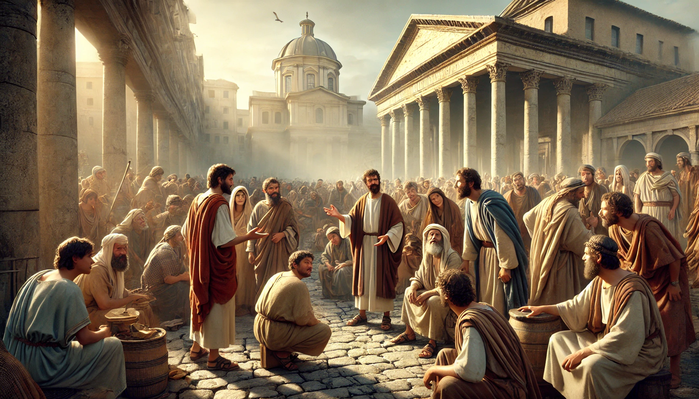
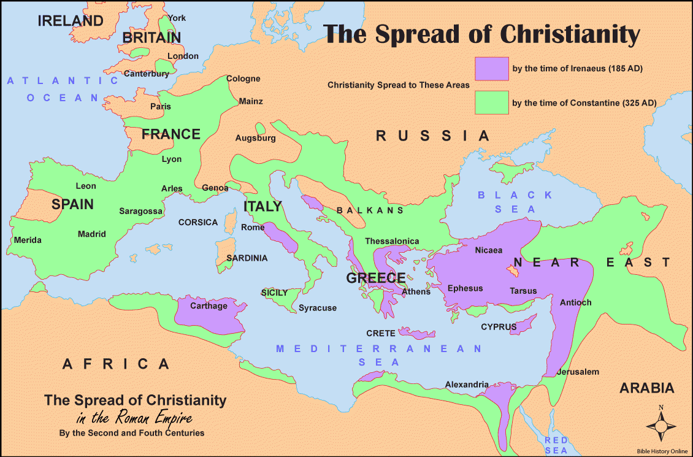
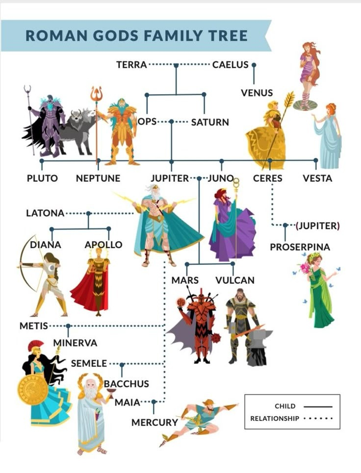
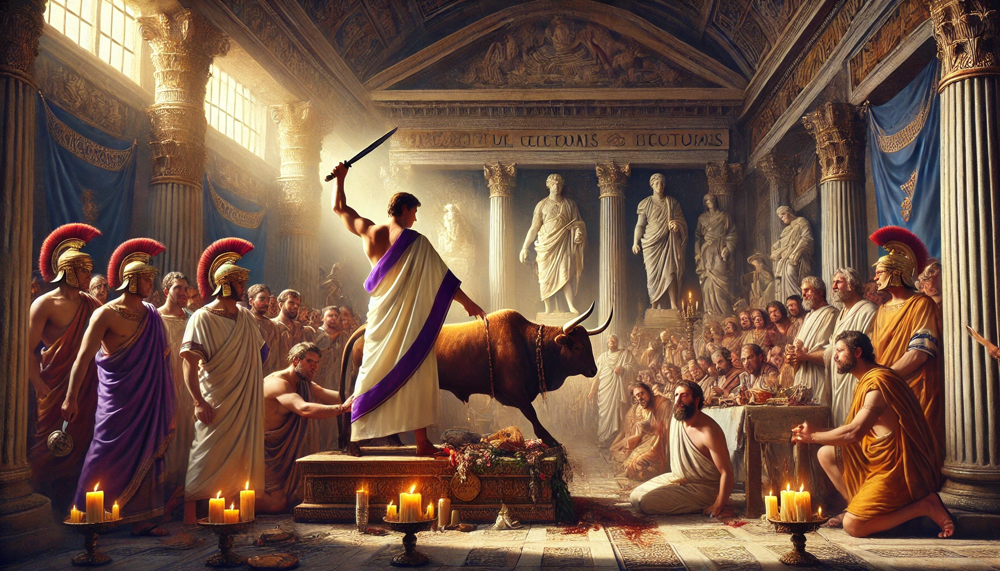
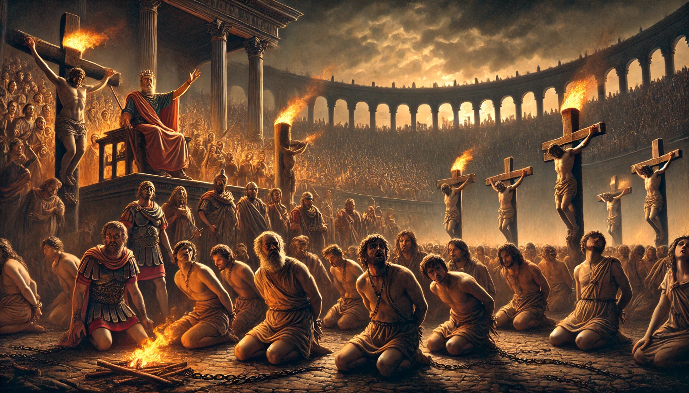
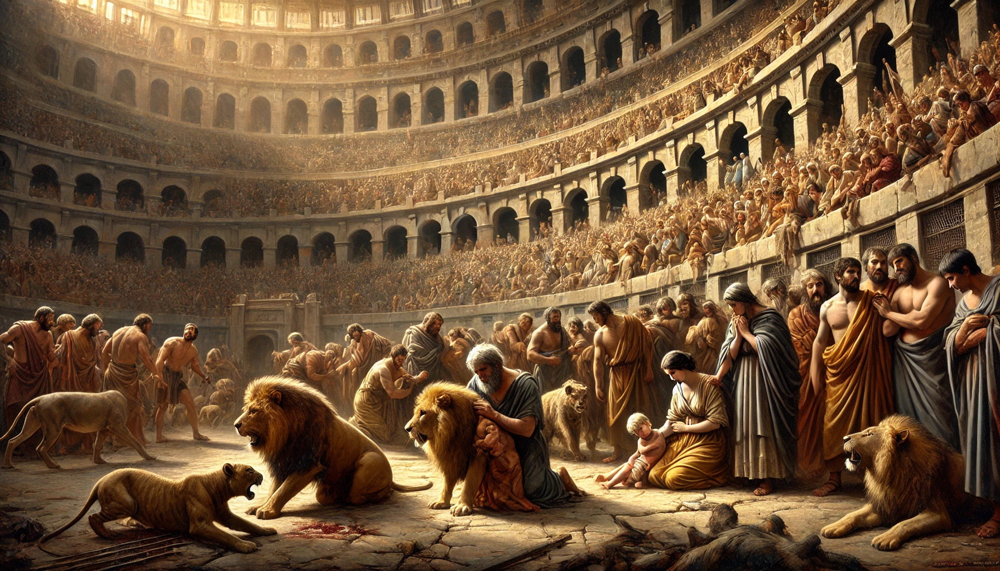
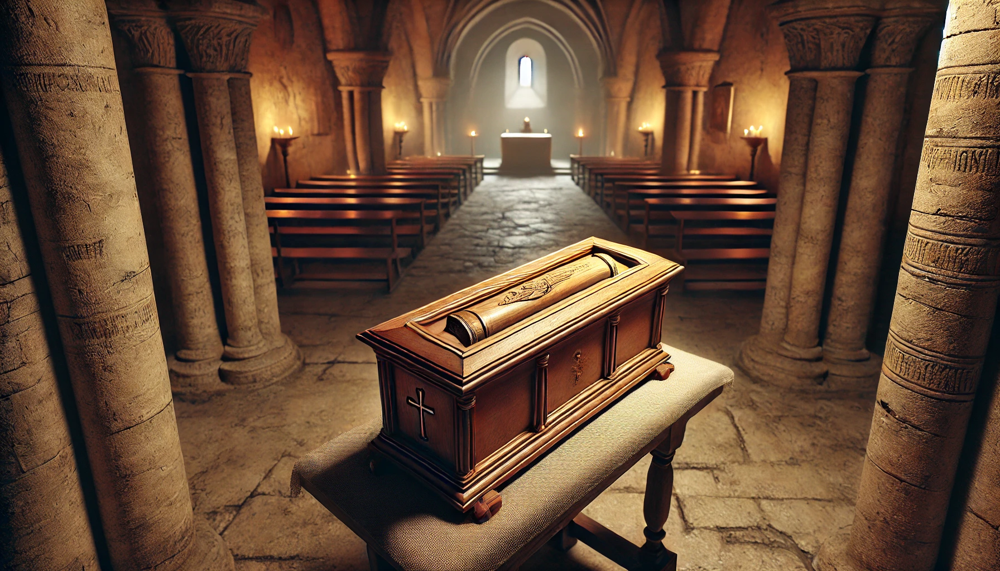
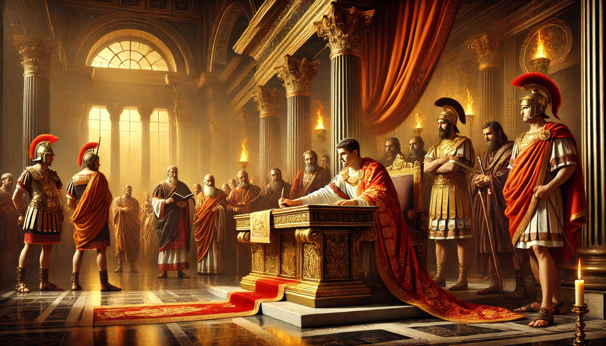
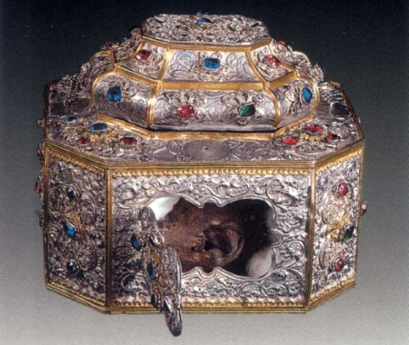

Primii creștini
După Înălțarea lui Iisus la cer, urmașii Săi, primii creștini, s-au
răspândit în toate colțurile lumii, dar în special în Imperiului
Roman, propovăduind Evanghelia și îndemnând oamenii să se întoarcă
la Dumnezeu. La început, erau priviți doar ca o sectă iudaică, însă
curând mesajul lor a început să atragă tot mai mulți adepți.

Primii creștini răspândind mesajul Evangheliei în Imperiul Roman
Această creștere rapidă a numărului de credincioși, atât dintre
evrei, cât și dintre păgâni, a stârnit suspiciuni în rândul
autorităților romane. Curajul creștinilor de a refuza cultul
împăratului i-a transformat în dușmani ai statului, marcând
începutul unei perioade întunecate de persecuții.

Romanii și religia
În Imperiul Roman, religia și politica erau strâns legate. Deși Roma
permitea diversitatea credințelor, toate popoarele supuse erau
obligate să venereze zeii Romei și să aducă jertfe împăratului,
considerat un fiu al divinității. Creștinii, însă, refuzau acest
lucru.

Arborele genealogic al zeilor romani, la care creștinii refuzau să
se închine
Această atitudine a fost percepută ca o amenințare la adresa ordinii
publice. Oficialii romani vedeau în creștinism un pericol, un cult
ilegal care putea submina stabilitatea imperiului. Creștinii
mărturiseau că există un singur Dumnezeu adevărat și un singur Domn,
Iisus Hristos.
Populația păgână îi acuza pe creștini de tot felul de nenorociri, de
la incendii la epidemii. Se credea că refuzul lor de a participa la
ritualurile tradiționale atrăgea mânia zeilor asupra întregului
imperiu, ceea ce a intensificat ostilitatea față de ei.

Ritual de sacrificiu într-un templu roman, pe care creștinii
refuzau să îl practice
Începutul persecuțiilor
Primele persecuții au fost sporadice și locale, însă cel care a
declanșat prima mare prigoană împotriva creștinilor a fost împăratul
Nero, în anul 64 d.Hr. După marele incendiu al Romei, în căutarea
unui țap ispășitor, Nero a dat vina pe creștini și a ordonat
arestarea și executarea lor.
Unii au fost aruncați fiarelor în arene, alții răstigniți sau arși
de vii, servind drept „torțe vii" pentru a lumina grădinile
imperiale. Aceste execuții brutale au marcat începutul unei ere de
persecuții sistematice împotriva creștinilor.

Martirii creștini în timpul persecuției lui Nero
În deceniile ce au urmat, persecuțiile au continuat în valuri,
intensificându-se sub domnia împăraților Domițian, Decius, Valerian
și Dioclețian. Creștinii erau adesea denunțați de vecini, trădați de
rude sau chiar prinși în timpul adunărilor secrete de rugăciune.
Autoritățile încercau să-i forțeze să renunțe la credință,
cerându-le să jertfească zeilor sau să se închine împăratului. Cei
care refuzau erau torturați și uciși, devenind martiri ai credinței
lor neclintite.

Martiri creștini înfruntând fiarele în arena romană
Martirajul nu era doar o execuție, ci un spectacol menit să
descurajeze pe alții. Creștinii erau expuși în arenele romane, unde
erau sfâșiați de lei sau obligați să lupte ca gladiatori. Cu toate
acestea, în loc să stârnească frica, aceste execuții întăreau și mai
mult credința creștină.
Mulți dintre cei care asistau la execuții se converteau, uimiți de
curajul și pacea interioară a martirilor. Acest fenomen a dus la o
creștere paradoxală a numărului de creștini, confirmând celebra
expresie că "sângele martirilor este sămânța creștinilor".
Nașterea cultului sfinților și a moaștelor
După fiecare martiriu, creștinii adunau trupurile celor uciși și le
îngropau cu evlavie. Mormintele martirilor deveneau locuri de
rugăciune, iar amintirea lor era cinstită prin slujbe și sărbători
anuale. Această practică a pus bazele cultului sfinților martiri.
Unul dintre cele mai vechi exemple este cel al Sfântului Policarp al
Smirnei, martirizat în anul 155 d.Hr. După moartea sa prin ardere pe
rug, creștinii au strâns cu grijă oasele sale, pe care le-au
considerat „mai prețioase decât aurul și decât pietrele scumpe".

Racla cu Sfinte Moaște
Cu timpul, moaștele au fost așezate în biserici, iar locurile unde
erau îngropați martirii au devenit centre de pelerinaj. Se spune că
multe dintre acestea emanau o mireasmă plăcută, iar la atingerea lor
se săvârșeau minuni de vindecare.
Victoria credinței
Deși Imperiul Roman a încercat să stârpească creștinismul prin sânge
și teroare, numărul credincioșilor a crescut neîncetat. În anul 313,
împăratul Constantin cel Mare a dat Edictul de la Milano, prin care
creștinismul a devenit religie permisă în imperiu.

Constantin cel Mare semnând Edictul de la Milano
Martirii, odinioară prigoniți, au fost recunoscuți ca eroi ai
credinței, iar moaștele lor au fost scoase din catacombe și așezate
în biserici. Aceasta a marcat începutul unei noi ere pentru
creștinism, care a devenit treptat religia dominantă a imperiului.
Astăzi, cultul sfinților și al sfintelor moaște rămâne o mărturie
vie a credinței dintâi, un pod între trecut și prezent, între pământ
și cer. Moaștele martirilor nu sunt doar relicve, ci semne ale
biruinței vieții asupra morții.
Astfel, prin sângele martirilor s-a pecetluit temelia (fundația)
Bisericii, iar prin moaștele lor se păstrează viu duhul celor care,
cu prețul vieții, au luminat calea credinței noastre. Jertfa lor
continuă să inspire și să întărească credința creștinilor din toate
timpurile.
Aspecte teloogice despre Sfintele Moaște
Iată aspectele fundamentale despre sfintele moaște:
-
În Cartea a IV-a a Regilor (13:21) este relatată o minune
remarcabilă: "Dar iată, odată, când îngropau un mort, s-a
întâmplat ca cei ce-l îngropau să vadă una din aceste cete și,
speriindu-se, au aruncat mortul în mormântul lui Elisei. Căzând
acela, s-a atins de oasele lui Elisei și a înviat și s-a sculat pe
picioarele sale."
-
Acest eveniment biblic demonstrează că încă din Vechiul Testament,
Dumnezeu a ales să lucreze prin rămășițele pământești ale
sfinților Săi
-
Minunea reprezintă un precedent important pentru înțelegerea
puterii sfințitoare prezente în moaștele sfinților
Definiție și semnificație
-
Sfintele moaște reprezintă trupurile întregi neputrezite,
fragmente de trupuri neputrezite sau oseminte ale sfinților
- Includ și veșminte sau obiecte care au aparținut sfinților
-
Starea de nestricăciune este o urmare firească (dar nu
obligatorie) a îndumnezeirii trupului din timpul vieții
Dovezi istorice ale cinstirii moaștelor
Biserica Primară:
- Sfânta Liturghie era săvârșită pe mormintele martirilor
-
Prima dovadă documentată: Epistola Bisericii din Smirna despre
martirul Sfântul Policarp (155 d.Hr.)
-
Descoperiri arheologice importante în România: Moaștele
mucenicilor Zoticos, Atalos, Filipos și Kamasis la Niculițel,
Dobrogea
Exemple remarcabile:
-
Mâna dreaptă a Sfântului Ioan Botezătorul în Antiohia (900 de ani)
- Capul Sfântului Ioan Gură de Aur

Capul Sfântului Ioan Gură de Aur, păstrat la Mănăstirea
Vatopedi, Muntele Athos (Grecia)
Caracteristici Distincte ale Sfintelor Moaște
Semne ale Autenticității:
- Neputrezirea naturală (fără intervenție umană)
- Mireasma divină specifică
- Proprietăți taumaturgice (făcătoare de minuni)
- Flexibilitatea membrelor în unele cazuri
Diferențe față de Mumificare:
- Nu implică tehnici de conservare
- Păstrează calități supranaturale
- Manifestă puteri tămăduitoare
Modalități de Cinstire în Biserica Ortodoxă
Practici Liturgice:
- Încorporarea în sfintele altare ale bisericilor
- Organizarea de pelerinaje
- Procesiuni pentru diferite trebuințe (secetă, necazuri)
- Sărbători dedicate descoperirii sau mutării moaștelor
Practici Individuale:
- Închinarea
- Atingerea și sărutarea moaștelor
- Rugăciunea la moaștele sfinților
- Participarea la procesiuni
Semnificația teologică
- Prezența harului divin și după moartea sfântului
- Legătura personală între credincioși și sfinți
- Mărturie a biruinței vieții asupra morții
-
Continuitatea prezenței sfântului în comunitatea credincioșilor